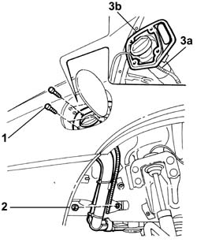

1040A37 Fuel filler pipe HOUSING SEAL - R.R.
- Path
- Procedures > 10 ENGINE > 1040 FUEL TANK AND PIPES > 1040A FUEL TANK AND COMPONENTS > 1040A37 Fuel filler pipe HOUSING SEAL - R.R.
- Kind
- repair procedure (removal / refitting; the operation number is the code)
- Applies to
- engines: 2.4 JTD 10V; all production periods
- Interactive page
- https://sloeber94.github.io/elrnDB-lThss/en/#/75832
Applies to: all engines; all production periods
 Removing
Removing
 Refitting
Refitting- Position the vehicle on the lift.
- Partly raise the lift.
1. Undo the bolts fixing the fuel filler to the bodyshell.
2. Undo the nut fixing the fuel filler mounting bracket.
3. Gently lower the fuel filler pipe (3a) and remove the seal (3b).

Applies to: all engines; all production periods
Refitting
Removing- Fit the new seal.
- Tighten the nut fixing the fuel filler mounting bracket.
- Fasten the fuel filler to the bodyshell using the fixing bolts.
- Lower the lift.
- Remove the vehicle from the lift.